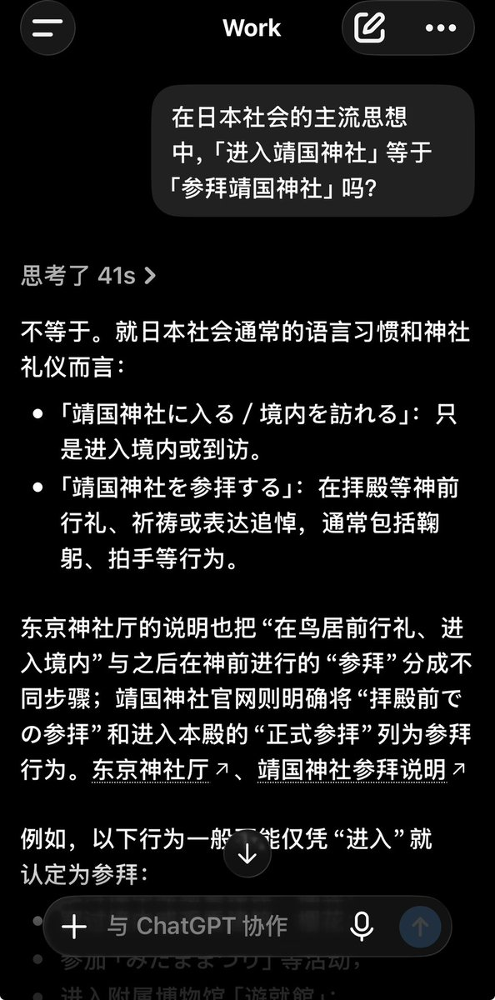
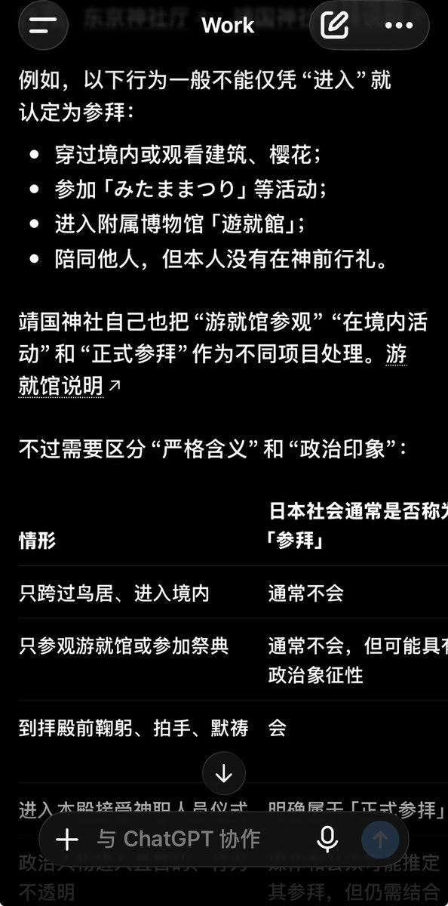
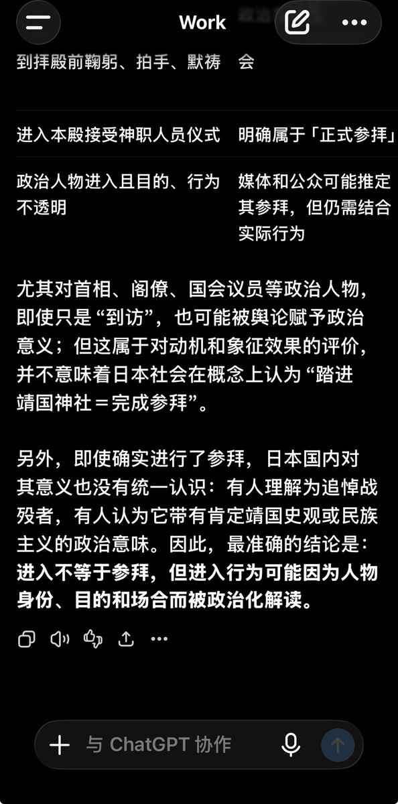

サイバー環状線
@CyberKanjousen
@A3shIta 環状線问了一下 ChatGPT，得到的回答如下：



A3shIta
@A3shIta
@CyberKanjousen 好了我查了一下
在日本主流舆论中，“进入”确实经常被等同为参拜，尤其是进入者身份为政治人物时；当然法律上不算
那么我收着点说，似乎对于社会环境来讲确实是等于参拜啊，这关乎粉红什么事？怎么什么都能归咎于“粉红作祟”？这和粉红的“有事美国干的”有什么区别？